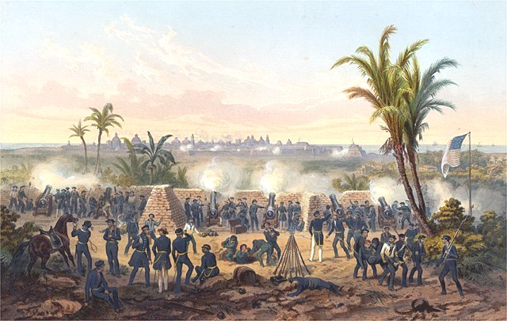
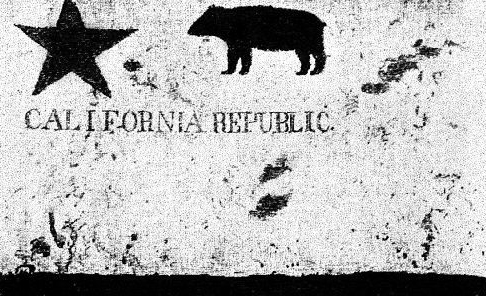
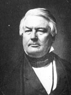

|
Texas became independent from Mexico in 1837, and
immediately petitioned to join the Union. Texas was a slave
state populated by Southerners and both Martin Van Buren and
Henry Clay realized that its annexation would be a
contentious issue, and would probably cause a war with
Mexico so they fought against it. When Whig William Henry
Harrison took office it appeared that Clay would get his
way, because everyone assumed Harrison would be Daniel
Webster and Henry Clay's puppet. Then Harrison died and was
replaced by John Tyler, who was really a Democrat with
Whiggish tendencies, chosen to balance the ticket.
The Annexation of Texas
Tyler wanted to further his political ambitions, his
pro-slavery agenda, and he was heavily influenced by the
followers of John Calhoun in the cabinet. Calhoun himself
was sent to Texas by Tyler to negotiate a treaty of
annexation, which he finished quickly, and sent to Congress
in 1844. Meanwhile, in Calhoun's absence, Congress decided
to lift its longstanding gag rule on anti-slavery petitions.
Calhoun was so angry that the gag rule had been repealed in
his absence, he published a series of letters he had written
to the British minister, in which he stridently defended
slavery. The letters became a major statement of Southern
|

The siege of Veracruz during the Mexican-American War
|
sentiment, and threatened to divide the Democratic party in
1844. They also emphasized the link between Texas and
slavery.
War with Mexico
In the same year, Democrat James K. Polk won election to the
presidency by a narrow margin. Polk believed that the U.S.
needed a port on the Pacific Coast. In 1844, he sent a
minister, John Slidell, to buy current day California,
Arizona and New Mexico from Mexico. When that failed, he
ordered General Zachary Taylor to incite a war, which he
did. The Mexican-American war ended in 1848 with the Treaty
of Guadalupe Hidalgo, negotiated by Nicholas Trist. Polk
didn't like the treaty, but nonetheless was forced to accept
it. The U. S. got a lot of territory in exchange for $15
million.
In 1846, David Wilmot, A Democrat from Pennsylvania, first
introduced his bill that stipulated that all territory won
from Mexico should be free soil. He tried to get it passed
many times, but was not successful until 1848. It became a
major political issue, as Democrats and Southerners opposed
it and Whigs and Northerners supported it. Thus, the Mexican
War began the process by which the two major parties became
aligned with sections, and thus became a major precursor to
the Civil War.
A New Option: Popular Sovereignty
When the Polk administration failed to defuse the slavery
issue, other politicians tried to find other options. The
most significant proposal came from Daniel Dickinson, a
senator from New York, who first proposed popular
sovereignty, a plan by which states would be able to decide
for themselves whether to have slavery or not. The plan won
immediate favor among many Northerners and Southerners.
In the election of 1848, the Democrats ran Lewis Cass, who
endorsed popular sovereignty. The Whigs ran Zachary Taylor,
a Southerner and slaveholder, who did not endorse any
position. A group of Northerners opposed to slavery convinced Martin Van
Buren to run as a third party candidate, under the name Free
Soil party. The people who supported Van Buren, it should be
noted, were not abolitionists, but were more conservative
individuals who had come to accept that a more feasible
solution to the slavery problem was containment of slavery
in the states of the South. The Free Soilers, therefore,
were opposed to popular sovereignty. Interestingly,
pro-states rights radicals, like Calhoun, were also opposed
to popular sovereignty, since they felt slavery should
basically be legal everywhere. Taylor won by a small margin,
but Van Buren polled 300,000 votes, and Southerners rightly
saw this as an ominous sign that there was rapidly growing
sentiment in favor of isolating slavery.
California Joins the Union
Gold was discovered in California in 1848, and the state
experienced a rapid growth in population. They quickly wrote
|

The flag of the California Republic,
which was briefly "independent" before joining the U.S.
|
their own constitution, which excluded slavery. This
momentarily crystallized Southern opinion in Congress, who
decided to issue an address accusing the North of a
conspiracy to encircle and subjugate the South.
Conservatives and moderates in both sections were shocked,
and President Taylor disavowed it, but many Southerners
took the address very seriously, and Congress postponed any
decision on California and New Mexico until Taylor took the
lead. In 1849, he threw his support behind the immediate
admission of California as a free state. The South was
incensed and led, as always, by South Carolina, called for a
convention of secession at Nashville. The aging Clay offered
a compromise, which the aging Webster threw his support
behind. The aging Calhoun opposed it because it wasn't
enough. Taylor opposed it because he refused to give in to
what he considered treason, and threatened to lead an army
himself against the South.
The Compromise of 1850
Early in 1850, Taylor and Calhoun both died, and the new
President, Millard Fillmore, joined forces with the man who
had moved to the forefront of the new Congress, Stephen
Douglas. The Compromise admitted California as a Free State,
New Mexico and Utah were organized as territories with the
fate of slavery there to be decided by popular sovereignty,
the boundary between New Mexico and Texas was fixed, the
slave trade in D.C. was ended and a new, stronger Fugitive
Slave Law replaced the old one of 1793. This undermined the
|

Millard Fillmore
|
Nashville Convention of secession, but engendered much
Northern resentment, and led to a reaffirmation of the
personal liberty laws. And, neither the North nor the South
was happy about the popular sovereignty for New Mexico. So,
the Compromise of 1850 was clearly only a temporary
truce.
The Kansas-Nebraska Act of 1854
Meanwhile, Stephen Douglas wanted to extend popular
sovereignty to all territories, not just New Mexico and
Utah. For the Southern states to support this, though, they
insisted that the bill also explicitly repeal the Missouri
Compromise of 1820. Douglass agreed, which satisfied the South.
It did not, however, placate free soilers
and conservative Democrats, many of which banded together
to publish an article in the National Era entitled "An
Appeal to the Independent Democrats", in which they
condemned Douglas and the Kansas-Nebraska Act. Douglas was
committed, and he managed to force the bill through
Congress, but just barely.
Source: Christopher Bates for the History 139A website
|